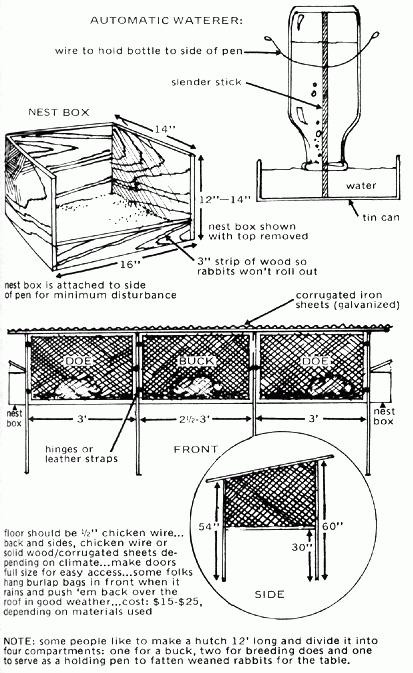

Normally a bad or misleading article on rabbit raising wouldn't bother me . . . but three?
Now, please don't get the impression that I'm down on MOTHER. On the contrary, I think you have an excellent publication that provides me and my Peace Corps volunteer friends with a lot of interesting reading and some good ideas. It bothers me, therefore, when an otherwise fine magazine puts out poor information on a subject I know something about.
My credentials as a rabbit expert? Well, first, I've had extensive experience with raising these animals in the United States and three African countries. Since my background is in microfarming techniques, I've devoted a lot of time to correctly run, inexpensive rabbit projects. In fact, I've raised the critters commercially for years and have written three books and a number of articles on the subject. I think, then, that I ought to know bad advice when I see it.
Let's begin with the reprint from the HAVE-MORE Plan in MOTHER NO. 2, pages 50-51. I realize that you published this material with a statement that some of the original info was out of date . . . but, even when you add such a warning, I'm not sure it's wise to print incorrect information for MOTHER's eager readers.
Take this statement on the rearing of young by foster mothers: "Wally rubbed a little Mentholatum on (the doe's) nose so she couldn't smell the difference between her own and the young one from another litter." Well, Wally shouldn't have done that. Mentholatum really burns tender tissue and you could actually peel a mother rabbit's nose by using it. If you want an aromatic substance for this purpose, peppermint oil from the drugstore is a better choice.
In fact, though, scent of any kind is probably unnecessary when you're transferring a litter. There's no need to destroy the smell either of the human hand or of the dam whose offspring are being moved, because does are not choosy in this respect and don't distinguish among the young even if they're of different colors. Evidently, when the young to be adopted are moved to the foster mother's nest and come in contact with her own litter and the nesting material, any distinct scent, that might be discernible to the doe is destroyed.
Of course, the young rabbits should not be over-handled and some breeders suggest that those to be adopted be picked up with a clean cloth or a piece of paper. Also, when selecting litters for fostering, it's wise to watch carefully for any evidence of infection among the young or the does so the transfer won't become a means of spreading disease.
I'd like to move on now to the HAVE-MORE Plan's suggestions about feeding, which are as inaccurate as those about handling the young. For example, rabbits don't need "hayracks full of hay". Two feedings - grain in the morning and greens in the evening - are all that's necessary.
Concerning grain feeds, the article says that rabbits "don't seem to like any grain that's ground up too fine" . . . whatever that means. Not so! I've fed the beasties poultry mash (formulated for laying hens) moistened with a little water and have always finished out strong litters of eight. If any of MOTHER's readers are using poultry rations already, they might as well be giving this chicken feed to their rabbits, too. Generally 1/2 cup of grain daily is sufficient for bucks and dry does, and 3/4 to 1 cup for pregnant or nursing females.
To balance their morning grain ration, the rabbits can be fed fresh grass or other greens each night (when they eat more and are more active). A liberal quantity should be allowed (generally as much as the animals can consume by morning). If stale greens are left in the cage the next day, though, the food should be removed and less given the following evening.
It's best to put green food in a simple chicken-wire holder open at the bottom and top. This container is placed on the outside of the hutch door . . . which should have an opening near the bottom of the feeder through which the rabbits can pull the grass. Such an arrangement is much better than heaping a pile of greens on the floor where they quickly become fouled with urine and pellets.
Remember that grass/weed feeding is how you keep your cost of production down. Greens are cheap - often free - and once the rabbits get used to them, they'll eat a lot and reduce your overall expense for feed. (Start the animals slowly on this food and increase the amount over a couple of weeks.) On many projects I've been involved with here in Ethiopia - and earlier in Nigeria - rabbits were maintained in good breeding prime on the diet I've outlined: 1/2-3/4 cup of grain in the morning and all the greens they could eat overnight.
There are other blatant mistakes in the HAVE-MORE article, but let's end with its suggestion for hutch management. The Robinsons say, "We keep our metal hutch in the barn. We clean it out once a week, keep plenty of straw on the floor and in the next box." This is very poor practice, as well as being too much work. For the best sanitation and prevention of hutch burn, coccidiosis and other diseases, the animals' quarters should be single-tiered and provided with a floor of 1/2-inch wire mesh.
To compound the HAVE-MORE Plan's errors, further misinformation on rabbit housing appeared not long afterward in MOTHER NO. 6, under the title "Pequoda's Rabbit Hutch". Even if Pequoda has been living in the woods for 30 years, his article was a disaster.
The sketch accompanying Pequoda's piece (on page 49) headed, "Here is an inexpensive coop with which you can gain maximum results from rabbits." Well, it's nothing of the kind and the author's calling a hutch a coop gives a clue to the of the advice.
First of all, I don't see how such a building could be called "inexpensive" . . . all that black building paper, shingle cement, etc., just aren't needed. And as for "gaining maximum results", the sketch shows a two-unit hutch . . . one for the buck, I suppose, and the other for the doe. Now, I can't believe that anyone would want to start with only two compartments, when you can build a considerably cheaper and better three-unit hutch for half the effort and expense. What's more, three animals are just as cheap as two considering building costs for the hutch, the meat raised from the feed, etc. Also, two does are a benefit in that they'll provide the buck with more exercise (fat males are not good breeders) and will permit a staggered breeding program to insure meat on the table year round.
One final comment on the Pequoda hutch: I'm very much surprised that Mr. Peterson likes to bend over every time he breeds, inspects or feeds his animals. Rabbit shelters should be waist high for easy and practical management.
You see, MOTHER, printing this kind of information is giving a lot of eager homesteaders a false start in an amazingly easy practice.
I'll finish my remarks with some comments on the excerpt from Grow It! in MOTHER NO. 15 (pages 18-24). Now, this article wasn't bad . . . it was the best of the three, but still, unfortunately, by no means complete. Like the other two pieces, Grow It! is especially misleading on the subject of housing the animals.
The worst omission in Langer's advice is the failure to mention the correct sizes for individual cages. This is a serious matter, for I can't begin to tell you how many people have failed with rabbits because they think these animals need only a minimum of space. The truth is that the project is doomed if the rabbitry is overcrowded.
Adequate space for rabbits varies with the breed: heavy, medium and small. For medium-sized varieties, the space per doe and nest box should be around 3 X 2-1/2 feet. The cost of hutch building can be greatly reduced, though, if the nest boxes are attached to the doe's cage to leave the floor space completely available to the mother and the 6-8 young that will be sharing her quarters for several weeks. (Though its dimensions were sufficient, by the way, the nest box in the Grow It ! article was a bit too elaborate. I much prefer a nail keg - or the model I've drawn - for the purpose.)
While we're on the subject of nesting, I think Langer's suggestion that clean scraps of cotton be provided for the doe must have been left over from some former experience with raising kittens. If straw is supplied about three or four days before the female rabbit kindles, she'll make a comfortable nest, and will also pull hair from around her teats to make the bed even warmer and cozier. Save yourself the time and trouble of offering her special materials.
After kindling, when the doe is ready to breed again, she'll give signs of being in heat. Since a lot of people aren't around their rabbits enough to catch these signals, I thought I'd mention that the female can in fact be bred any time (except for a couple of days before and after estrus . . . but don't worry about that). If she's not in heat, however, it may be necessary to restrain her by the loose skin over the shoulders until the buck mounts. (He'll get used to this help in no time.) Also, many breeders assist in mating by sliding their free hand under the belly of the doe and pushing the tail back with a finger on each side of the vulva. Though such restraint is often not necessary, it's useful when working with a nervous or young female.
Just one last point about the Grow It! excerpt: The automatic feeder was grossly imaginative, and I don't understand the use of the screen bottom, which eventually becomes a good resting place for stale or wet feed and the grains that rabbits don't care for. Leave the screen out and have the feeder easy to clean . . . or forget the whole idea and use a heavy earthernware dish or bowl. A small coffee can nailed to a piece of board also works well and is cheap.
And speaking of automatic devices, I don't see why saltwaterers weren't mentioned in any of the three articles. They keep a constant supply of fresh water available and are easy to make (see drawing).
In conclusion, there are many points of confusion in all three articles, and I'm sorry my time doesn't permit me to write a better, more comprehensive paper for you. I hope, though, that this letter will prompt a more thorough review of your contributions for accuracy and practicality. Don't skim over your subject matter, but give the reader what he will need to know to make a correct and knowledgeable start.
Harlan H.D. Attfield
Agricultural Program Representative
Peace Corps, Ethiopia
|
 |
|
|